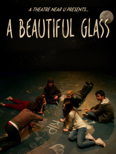
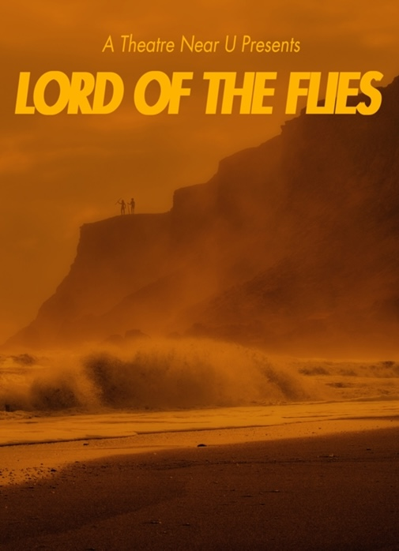
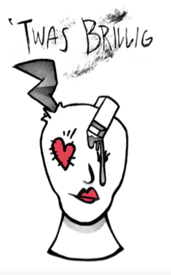

Press
Body of Water (San Francisco)
By Harry Duke, For All Events
"If this production is any indication, A Theatre Near U may just have fired the first shot in a revolution to determine the future of Youth Theatre."
It’s just as well that Mickey Rooney passed away earlier this year because if he’d seen what his exhortation of “Hey kids, let’s put on a show!” has led to, it might have killed him. That’s not a criticism of the production covered by this review, just an acknowledgement that the times have significantly changed since Mickey and Judy got the gang together to put on a show in the old barn.
The “old barn” today is the Southside Theatre in Fort Mason and the show is “Body of Water”, an original piece and the inaugural production of the Palo Alto-based A Theatre Near U company. It’s a post-apocalyptic tale of survival and is performed by a cast who range in age from thirteen to eighteen. Oh, and it’s a musical.
Set in an isolated cabin sometime in the future, “Body of Water” is the tale of a group of young people who are sent away for safety by their parents. Society has reached a point where either you completely subscribe to the current dogma of those in power or you are lobotomized or killed. Those who resist and have fled are hunted down by “The Shepherds” and returned to face their fate. The few who have found their way to the cabin scrape by to survive and await instructions from their parents. Things quickly change when they kill one of the “shepherds” and two new escapees arrive who may or may not be what they seem. Is it safe to stay where they are or is it time to move on? Do they trust the new arrivals or follow their leader? Will they ever hear from their parents again? Is there any real hope at all?
No, this is not the stuff of typical Youth Theatre and thank you to co-directors Tanna Herr and Tony Kienitz (also co-founders of the Company) for that and for giving a group of talented young performers the opportunity to do something beyond the umpteenth version of “Bye Bye Birdie”. The book was written by Kienitz, who was savvy enough to accept input from his cast on how a teen might really say something or feel about a situation.
The show contains fifteen songs with music and lyrics by Jim Walker that echo the overall darkness of the piece. Songs such as “We Know Who You Are”, “All Fall Down” and “Alibis” stand in stark contrast to the usual happy-go-lucky fare common to musical theatre. This is Walker’s first attempt at scoring for the stage and he mostly succeeds, though several songs have too-long moments of instrumentation that deadened the action. Under the direction of Pierce Peter Brandt (and accompanied by a very good off-stage band), the vocal work done by the cast in interpreting Walker’s songs was outstanding. These kids can sing.
Choreography by Kaylie Caires was energetic and appropriately anger–based, with a lot of foot-stomping and sharp, forceful movement. There were moments that I wished the choreography were more organic to the scene, as opposed to the cast stopping, obviously moving into position, and then beginning. On the whole, though, the large-scale ensemble numbers were well done. These kids can dance.
The choreography, however, became an obstacle to those singing solos. Something was lost when it became obvious that the solo performers’ energy and focus was split between executing choreography and performing the songs. There were moments when you could see them trying so hard to hit their marks that they lost their connection to the music and lyrics. While there’s no doubt that the ability to do both should be a goal for any performer with a desire to do musical theatre, it might have been advantageous to lighten the load on them this time around.
So the cast can sing and the cast can dance, but can they act? Yes, they can. With a diverse cast of fourteen, one should expect a range of acting ability and stage presence and yes, some are stronger than others, but collectively they do a remarkable job of holding the stage and making the show their own. Each one is a distinctive character and their individual work is key to accepting the totality of their situation. These young people are doing serious work and many aspire to be professional actors. While I am loathe to single out any single performer from such a cast, I can’t resist continuing with the Mickey Rooney references and state that Shayan Hooshmand, like Rooney, is small in stature but big in the talent department. His character “Shorty” is the heart and soul of this play and Hooshmand delivers a performance that belies his thirteen years of age. Keep your eye on this kid.
For that matter, keep your eye on all of them, and keep your eye on this theatre company. If this production is any indication, A Theatre Near U may just have fired the first shot in a revolution to determine the future of Youth Theatre.
An Energy Driven Production of Tony Kienitz’ Body of Water
By Richard Connema, Talkin' Broadway
"The teen-age cast has been rehearsing for eleven months, yes eleven months, to present this two and a half hour production. All are memorable in their acting, singing and dancing. These are the adult performers of the future and some could very well be stars."
A new theatre company called A Theatre Near U has debuted its first production at the Southside Theatre at Ft. Mason. This is a theatre academy for teens who want to have a life in musical theatre when they become adults.
Tony Kienitz and director Tanna Herr have assembled a cast of triple-threat teen performers ages 13 to 18 to present the world premiere of Kienitz’ Body of Water. This is an intense musical drama about a group of kids who escape the terrors of a civil war by hiding out in an isolated mountain cabin. Since they have not heard from their parents, they believe they have no future with them, so they strike out on their own as their only hope of survival. Watching this fascinating drama, I was reminded of “Lord of the Flies” with one person becoming more like a dictator to the rest of the group.
The music by Portland and Hollywood composer Jim Walker is rich and evocative and the dances by San Diego choreographer Kaylie Caires are tornado driven, sometimes reminiscent of the work of the Alvin Ailey and Paul Taylor dance companies. The teen-age cast has been rehearsing for eleven months, yes eleven months, to present this two and a half hour production. All are memorable in their acting, singing and dancing. These are the adult performers of the future and some could very well be stars.
Shayan Hooshmand, age 13, gives a uniquely fetching performance as Shorty. His voice has a pitch perfect resonance and he can really shake a leg when dancing. Also outstanding is Aaron Slipper, age 18, who could well become a great actor. He plays the “dictator” of the group and has a vibrant theatrical voice that resonates through the theatre.
Winston Wang, Ido Gal, Cara Parker, Jackson Wylder, Ali Arian Molaei, Alia Cuadros-Contreras, Audrey Forrester, Bella Wilcox, Sara Grey, Elizabeth McCole, Jasmyn Donya and Juan Santos give stimulating performances. Backing up these young actors are Will Kast on guitar, Curtis Wu on violin, Jess Feeman on drums and Gabe Galang on guitar and bass; music director is Pierce Brandt.
Body of Water plays through June 28th, 2014, at Southside Theatre at Fort Mason Center, Building D, 3rd floor, 2 Marina Blvd at Buchanan Street, San Francisco. For tickets and other information, visit atheatrenearu.org.
Body of Water
By Charles Jarett, Rossmoor News
"What evolves is an absolutely captivating, terrifying sequence of events that keeps you on the edge of your seat, not knowing what will happen next or when. There is a real shock value to the many twists and turns in this story."
This past week I had the good fortune to visit the Southside Theater at Fort Mason in San Francisco following a tip by my daughters about a new musical drama, “Body of Water,” playing through June 28.
The story is about the anguish, frustration, fear, trials and tribulations being suffered by a group of teenagers who had been sent to hide in an isolated mountain cabin to wait the return of their families who were searching for a path to freedom during a sectarian civil war.
The opening curtain is literally ripped away to reveal 12 young people in a claustrophobic mountain cabin, crying out in their opening song, “Mummy and Daddy,” about their fears and anxieties and their uncertain future without their parents. These young people were sent by their families to this temporary hideaway with the promise that they would be safe from the “shepherds” who were killing their kind, until their parents could find safe transport across the demarcation zone.
What evolves is an absolutely captivating, terrifying sequence of events that keeps you on the edge of your seat, not knowing what will happen next or when. There is a real shock value to the many twists and turns in this story. Death occurs, lives are spared, lives are lost, but not one minute will be lost on the audience, which must ride these undulating waves of life and death decisions all stirred up in a brilliant and cacophonic mixture of words, music and social madness.
I was so engaged when I saw the show, that when the intermission time came around, I said under my breath, “No, don’t stop now!” It’s like when you are reading a really good book and you just don’t want to put it down.
There are several unique facets that make this play, this musical, so special. First, it has a seasoned co-director and producer, Tanna Herr, and Los Angeles actor, author and co-director, Tony Kienitz, who together brought a lot of hard work to the table to engineer, design and give birth to new a totally new musical.
Kienitz is also a talented enough actor to have even shared screen time with the likes of Kevin Bacon, William H. Macy and Jack Lemmon. It was during the time he starred in one of Steven Spielberg’s science fiction anthologies “Amazing Stories” in the mid-1980s when he became enamored with writing.
Kienitz incorporated into his storyline the wonderfully raw, cryptic and thought-evoking lyrics by his friend of 30 years, Jim Walker. The lyrics fit this story like the bejeweled movements in a fine watch. Kienitz carefully selected songs that evoke the emotions, frustrations, anxieties and hopes of the teenagers who are at the heart of this story. There are poignant songs of love, painful songs of longing, songs of excuses, abuses, conciliation and reality, all bringing the intensity of their terrible situation to a full pulsating, heart-pounding fruition.
Walker is a well-known eclectic Portland musician who has over 20 albums under his own label, JVAMusic. He is a musician who is sought out continually in the Portland music scene, seeking to entertain in such venues such as the world renowned Jimmy Mak’s Jazz in the Portland Pearl District.
The young actors cast in this show are asked to weave their own thoughts, words and understanding of emotions into the very script itself during rehearsal, just as if they were actually living in this hell hole of circumstances. And what fine actors they all are. I was actually blown away by their heartfelt passion and devotion to the development of this musical. Their dancing, singing, even some saxophone instrumentation are contributions that really work.
Aaron Slipper, who plays the hideaway cabin’s group leader, Bosh, walks a fine line between controlled wisdom and madness in his portrayal. His delivery of the love song “Rachael” is both touching and chilling. The beautiful voice of 13-year-old Shorty, played by Shayan Hooshmand, is captivating. His song, “All Fall Down,” offers a powerful and cryptic message.
The resolving of the brotherly love-hate relationship between Shorty and his older brother, Charlie (Ali Arian Molaei), is heartwarming and frustrating as well. I do not have space to specifically point out how each and every one of the beautiful and talented actors contribute to the show and how well they bring their “A” game to this production. You will just have to find a way to get to this theater as each one of these wonderful performers are worth the trip to San Francisco, individually.
The lighting and live music are very good and contribute significantly to the entire show. But I cannot close without highly recommending that you go to see the exciting dance choreography, tailored to the story, the young people, and the emotion! The dance and fight choreography was designed by Kylie Caires who lives in Southern California, and who came to the Bay Area specifically to design this unique show.
In 1954, William Golding wrote a book titled “Lord of the Flies” about a group of boys who were war evacuees who became marooned on an island and in the process of governing themselves, digressed to near savages before they were rescued. This play reminds me of that story that so well illustrated the frailties, ingenuity and resourcefulness of mankind. But this play is that and so much more in so many ways, in addition to being so well-conceived and so well delivered. I think this musical has great future prospects as well.
This theater company has a great name to make it easy to remember. It is called A Theatre Near U and it is producing this show in the well-known and comfortable Southside Theater on the third floor of the old Fort Mason military housing complex in building D. The address is No. 2 Marina Blvd, just a few blocks west of Van Ness Avenue in San Francisco.
Tickets range in price between $15 and $20 each and the show runs Fridays and Saturdays at 7:30 pm, and Sundays at 2:30 pm. Tickets can be ordered through the website www.brownpapertickets.com/event/62600, or email the company atcontact@atheatrenearu.org for information.

Exploring the beautiful glass of life
By Ande Jacobson, A Good Reed Review
"A Beautiful Glass takes a serious subject, and comes at it from all sides helping to both put things into a more accepting perspective, and driving home a message of hope, even in the face of despair. In the end, it doesn’t matter if the glass is half full or half empty. It’s beautiful, and so is this production."
Have you ever considered how one might cure intentional death? That’s an odd way to put it – intentional death. That might bring suicide to mind, but as Justin Capps (Atticus Shaindlin) explains to George (Emily Liberatore),
“Suicide implies a crime …. It’s [intentional death] not a crime. Almost every time, it’s an illness that causes the act. I’m trying to cure it.”
Curing intentional death requires examining what’s behind it, which of course means exploring the attitudes and actions surrounding mental illness. That’s the central theme in A Theatre Near U’s world premiere of Tony Kienitz’s new musical, A Beautiful Glass, and it is, in a word, smashing.
The story was initially inspired by recent events related to suicide in the Palo Alto area, but as Kienitz and his wife and collaborator Tanna Herr dug deeper into the issues as part of their research, they found that many teens were disturbed by how their generation is portrayed in the media. Kienitz wanted to paint a more in-depth picture of some of the attitudes he and Herr were seeing amongst the youth in their community. In the process, he made this work a true collaboration, not only with Herr, but also with their cast and creative staff.
Throughout the process, the company helped to shape the material, including the prose, the music, the movement, the staging, all of which combine in glorious synergy. It’s a story that demands exploration of societal attitudes and biases, smashing several negative stereotypes, leaving in its wake greater understanding.
Herr and Kienitz co-direct their cast of exceptional young actors in this insightful work. Pierce Peter Brandt is the vocal director. Ali Arian Molaei does double duty as both cast member and choreographer for this production.
While Kienitz wrote the book and lyrics, the music composition was shared amongst several artists including: Andrew Lu, Annabel Marks, Peter Willits, Jeremy Samos, and Jeremy Erman. The performance band includes: Willits (drums), Samos (guitar/bass), Leanne Miron (violin/ukulele/piano), and cast member Shayan Hooshmand (piano).
The 18-member cast, aged 13-19, is led by Shaindlin and Liberatore. Everyone else plays multiple roles in this versatile ensemble, each bringing forward different nuances to the story. Beyond Shaindlin, Liberatore, Molaei, and Hooshmand, the rest of the ensemble cast includes: Alexandra Dinu, Lauren Emo, Anna Feenstra, Monica Hobbs, Elizabeth McCole, Cara Parker, Alyssa Rojas, Quincy Shaindlin, Zoe Stanton-Savitz, Mia Trubelja, Robert Vetter, Gil Weissman, Jackson Wylder, and Derek Zhou.
In a fortuitous bit of casting, Quincy Shaindlin, five years Atticus Shaindlin’s junior, plays the young Justin at several points in the story. Their family resemblance is strong making the younger Shaindlin all the more believable.
Stargazing 1George is a student fascinated by supernovas and has a telescope setup in a remote location that she unintentionally ends up sharing with Justin. He’s quirky, even nuts by most of his contemporaries’ standards, but she becomes interested in his quest and starts helping him. The two have a connection that draws closer as the story develops. The rest of the cast takes on various roles of people, past and present, who have influenced Justin as he and George explore how to complete his quest.
The music is woven into the story, the lyrics driving the plot forward with a combination of explosive intensity, wonder, and heart. The opening number, “This Town,” brings out the anger and angst the kids feel. They are struggling to deal with the losses of friends or family they’ve endured, and the lack of understanding they see from their town. The choreography punctuates their words in sharp, stylized movements that are nicely synchronized.
The middle of the song shifts to a lilting ballad sung by Justin and George, clearly caring for one another and sharing their wonder of the stars as a portent of things to come. After they leave, the angst-ridden ensemble reprises the theme at the top to finish the number.
Later in Act 1, as Justin tries to explain to George what he’s learned in his exploration about the attitudes toward depression (a leading predecessor of intentionally dying), the company bursts forth with the song, “Good Luck With That.” The song lampoons medicine’s practice to treat or cure pretty much any ailment, save for depression. In this number, Justin is a doctor treating everyone’s ills, except his younger self when he asks for help. The song is fast-paced, the dance is frenetic and exciting, and the message is clear.
Throughout the performance, Molaei’s choreography shines. His design is varied and challenging, but the cast is on top of it, executing each move with precision and confidence, greatly intensifying the feelings expressed in the lyrics.
GrandpaThe title number, “It’s a Beautiful Glass,” near the end of Act 1 is especially poignant. Justin’s grandfather (played by Molaei) launches into a lovely melody sharing a wondrous philosophy of life. Justin joins him in song until, in a particularly nice display of his abilities, the grandfather rises from his wheelchair and dances a solo showing great fluidity and artistry, bringing into motion the feelings expressed in the lyrics. After the dance, the two continue in a vocal duet, bringing the song to a heartfelt conclusion as the grandfather sits back down, and Justin replaces the shawl over his grandfather’s shoulders.
Shaindlin’s portrayal of Justin throughout the story makes him human, and very likable, despite a few social quirks. He makes the audience grow to really care about him, almost as much as George does. And Liberatore’s portrayal of George is gripping. Her character’s intelligence comes through. Their scenes together are often simultaneously touching and amusing, which is all the more impressive when dealing with some very serious topics. The imagery they invoke is vivid, even before other cast members step in to act out their discussions.
There are some time shifts that occur throughout the story, but suffice it to say that the historical references used are both intriguing and enlightening, though a fair amount of poetic license is at play. Originality is evident in the unusual way that the story is told.
The set is simple – just a few benches sit stage right and stage left, along with a large upstage set piece that is rotated to either be a schoolyard bench, or a hollowed out tree for George’s telescope. The Mountain View CPA’s Second Stage theatre set up is a black box with seating on three sides of the performance area. The compact band is located upstage left.
To save space, Willits uses a cajón (drum box) in place of a standard drum kit. In addition to being extremely compact, the cajón, which originated in Peru, is perfect for small, mostly acoustic combos as it blends nicely with the other instruments without overpowering them. It can be played with hands, or brushes, depending on the effect desired.
Preshow, the band, with Hooshmand on piano, plays a number of contemporary, and jazz standards, quietly setting the mood for the performance. During the performance, there were times when only one or two instruments are used, such as solo violin accompanying a solo singer, or guitar and drums punctuating a small subset of the ensemble. Overall, the level of musicianship is high, although there is some momentary, unintended dissonance between acoustic instruments.
Some of the members of the ensemble are stronger than others, and while they all handle the movement beautifully, there are a few times when some words are lost due to lack of projection, sloppy diction, or flat delivery. Overall though, the actors still put great emotion and definition into each of their characters.ABG Finale
A Beautiful Glass takes a serious subject, and comes at it from all sides helping to both put things into a more accepting perspective, and driving home a message of hope, even in the face of despair. In the end, it doesn’t matter if the glass is half full or half empty. It’s beautiful, and so is this production.
What: A Beautiful Glass, by Tony Kienitz
Where: Mountain View Center for the Performing Arts, 500 Castro Street, Mountain View and Magic Theatre at Fort Mason Center, Bldg. D, 3rd floor, 2 Marina Blvd., San Francisco
When: San Francisco, 15-17 June 2016; Mountain View, 10-11, 18-19, 23-25 June 2016
A Beautiful Glass
By Harry Duke, For All Events
"The Company’s third full production, A Beautiful Glass, examines the issue of suicide not only through the eyes of the modern teen but through history as well. Their cast consists of aspiring young professional performers who workshop all aspects of the production. Who better to consult on the feelings and means of expression of the current generation than local youth aged thirteen to nineteen, and who better to tell the story?"
If the thought of sitting in a theatre for a couple of hours attending a youth theatre production on the subject of suicide raises the specter of enduring a live action version of an old ABC Afterschool Special, allow me to assuage those concerns. The hallmarks of those television specials were well-intentioned but contrived scripts covering issues from teen pregnancy to substance abuse to eating disorders and casts with performers like Scott Baio and Justine Batemen. The peninsula-based A Theatre Near U, a film and theatre academy, takes a decidedly different approach. The Company’s third full production, A Beautiful Glass, examines the issue of suicide not only through the eyes of the modern teen but through history as well. Their cast consists of aspiring young professional performers who workshop all aspects of the production. Who better to consult on the feelings and means of expression of the current generation than local youth aged thirteen to nineteen, and who better to tell the story?
Justin is a gregarious young man who goes out of his way to welcome new students to his school. Georgianna is an introverted young lady who spends her evenings in a hollowed-out tree peering through a telescope in the hope of discovering a new astronomical entity. Their paths cross when Justin, also seeking a secluded area to work on his own project, plants his sleeping bag below Georgianna’s tree. After a few days of observing Justin and his somewhat odd behavior, Georgianna reveals herself to Justin, and Justin reveals the reasons for his behavior. He is seeking a cure for the illness of suicide or, as he prefers to refer to it, “intentional death.” Georgianna joins Justin on his quest, and the manner in which he performs his research and the historical discoveries he has made unfold on stage in a series of vignettes that often include song and dance.
The strength of this company’s work is the incredible level of talent involved. Lead performers Atticus Shaindlin (Justin) and Emily Liberatore (Georgianna) have terrific chemistry and vocal talent to boot. With a cast of characters including Cleopatra, Van Gogh and Sylvia Plath, the ensemble of sixteen young, absolutely committed performers give more-than-credible performances as the aforementioned characters and more. Each had their moment – which was problematical when looking at the show as a whole – with a nice mix of humor, poignancy and drama to challenge them.
In a cast this large and talented, it may seem unfair to single out some individuals at the perceived expense of others, but it would be remiss to not recognize excellent work. Standouts for me were Quincy Shaindlin (VERY funny as a young Justin), Jackson Wylder (showing nice range from an emotionally devastated Van Gogh to an egotistic Pyramus) and Ali Arian Molaei. Mr. Molaei is what is commonly referred to in the ‘biz’ as a “triple threat”, meaning he can act, he can sing, and he can dance. Most importantly, he can do them all well – very well. Whether amusingly and energetically articulating the thoughts of the luckiest/unluckiest man on earth via monologue or gracefully expressing the beauty of life through dance, Mr. Molaei’s ample talents were put to excellent use. Oh, and he choreographed the show as well – a very impressive and diverse body of work within a single show.
The problematic aspect of this show alluded to earlier in this review is its length. In wanting to give each cast member a moment to shine, the show’s running time ends up at close to three hours. As a showcase for the talents of the artists involved, I can respect the desire of playwright Tony Kienitz to provide all the material he could for the top-notch cast and there is a nice blend of humor to lighten the load of the heavy subject manner. However, as co-director (with Tanna Herr), Kienitz might have considered excising several scenes and songs without upsetting that blend. While entertaining (a bit on Shakespeare’s suicide scenes in particular), several felt as if they were there only to showcase the cast and not to further the story. Perhaps a good lesson for the young performers to learn now is that sometimes things get cut.
With that caveat, there’s still a lot to like in “A Beautiful Glass” beyond the exceptionally talented cast. The original music is excellent (with three credited lyricists and six credited composers.) It consists of a variety of styles from traditional musical theatre to alternative rock and is delivered with appropriate gusto and emotion by the cast under the vocal direction of Pierce Peter Brandt. There are also some very interesting and clever technical elements that demonstrate the ability of those elements to enhance the storytelling without distracting from it.
A Theatre Near U continues to push the boundaries of “youth theatre” in an extremely challenging and rewarding direction. Is this …Glass half empty or half full? Brimming with top young talent, A Beautiful Glass is definitely more than half full.
A Theatre Near U Presents "A Beautiful Glass" through June 25.
Thurs, Fri, Sat @ 7:30 pm
Mountain View Center for the Performing Arts
500 Castro Street
Mountain View, CA 94041
Shining light on dark issues
By Anna Medina, Palo Alto Online
"The teens receive a unique, inside view of the process of developing an original work one that is written and adapted specifically for them as actors. Students are involved in almost every aspect of the production, from the score, to the lighting and stage managing."
What if we stopped wondering whether the proverbial glass was half-full or half-empty and recognized it instead as simply a beautiful glass?
This philosophical reframing lies at the heart of A Theatre Near U’s latest original production. In its various forms, art can be understood as a response to culture and society, and writer/producer/director Tony Kienitz’s work is no exception. Kienitz created “A Beautiful Glass” in response to recent teen suicides in the Palo Alto area and the community’s attempts at understanding the tragedies.
As the founders of A Theater Near U, Kienitz and his wife (co-director and producer Tanna Herr) are in their third year writing, directing and producing an original musical, this time with an 18-member cast ranging in age from 13 to 19. Each year, they’ve worked with local students they hand-picked — students who are involved in theater productions at their schools and in the community at large and who are interested in receiving more focused training and experience. “A Beautiful Glass” will be performed in Mountain View and San Francisco.
As Kienitz delved into research for this year’s show, he and Herr observed that many teens were in disagreement with the media’s portrayal of them.
“The project started out as a response to the media portrayal of Palo Alto in particular, but (also) the Bay Area, … as a place where teens were in trouble, and the teenagers here (were) saying, ‘I don’t see what they’re saying,'” Kienitz recalled.
Herr noted that teenagers also were disagreeing with a lot of adults about why these suicides had happened. Additionally, Kienitz and Herr began to notice a pattern in the way that communities as a whole tended to address suicides.
“It started to become apparent and clear to us that a lot of the culture the way that communities deal with suicide is so hush-hush. There’s a reason you don’t publicize who the kid is, but in the end, it also does a disservice to that kid because it dehumanizes (him or her),” Kienitz said.
There was one conversation in particular that introduced a perspective upon which Kienitz expanded. A friend whose sister had committed suicide spoke of how the saddest part after her death was that it was as if her sister had never existed.
“(My friend) said specifically, ‘If my sister had died of cancer, we would have had an annual celebration of her life. We would’ve talked about it all the time. People would’ve said, “Oh, remember how great she was?” But because she had depression and her illness killed her, nobody talked about it,'” Kienitz said.
This conversation informed the message and the script of “A Beautiful Glass,” which tells the story of Justin Capps (played by returning cast member Atticus Shaindlin), who is trying to cope with suicides in his circle of friends while desperately seeking a “cure.” A home-schooled senior, Shaindlin plans to attend Carnegie Mellon University, where he will study musical theater. Emily Liberatore, a senior at Gunn High School, plays the smart and idealistic Georgianna, with whom Capps forms a connection.
In addition to exploring the topic from the perspective of modern teens, the play also makes use of cultural and historical points of view, through the lives and deaths of historical figures such as Cleopatra and Vincent Van Gogh and literary figures including Romeo and Lady Macbeth.
The teens receive a unique, inside view of the process of developing an original work one that is written and adapted specifically for them as actors. Students are involved in almost every aspect of the production, from the score, to the lighting and stage managing. They had a hand in composing some of the music, at one point getting together for a jam session.
Since the play touches on so many stories and the topic is global, Kienetz said that rather than having one composer or lyricist, they chose to include a variety. Consequently, the play features different kinds of music, from traditional songs from certain eras to improvised and discordant alternative-rock songs that students created.
“It’s been interesting because it’s not like at school where you have a lot of adults walking you through it. Working with all the people — they’re definitely dedicated so that makes it a lot easier,” said Jessica Wu, who’s serving as stage manager.
“What I like about (Kienitz and Herr) is you sort of get a feel for your acting. They let you figure out your strengths, your weaknesses and what you need to work on, and they push you in a way that’s so different than how (other teachers) push you,” said Alexandra Dinu, a student at Palo Alto High School who will be playing the roles of Sylvia Plath, Portia and Nanette.
Despite the heavy topics of mental illness and suicide, the play is punctuated with surprising moments of levity and humor — an intentional decision on Kienitz’s part, since he believes that humor is crucial to portraying the characters as fully realized individuals.
“It’s very uplifting and humorous in a lot of ways because these people were funny. The two people I wrote about that I knew were both really funny people,” Kienitz said.
At the end of the day, Herr and Kienitz hope “A Beautiful Glass” humanizes some of the varied and untold stories of those who have died by suicide and, in doing so, brings to light some of the complexities and nuances that surrounds the issue.
What: “A Beautiful Glass,” presented by A Theatre Near U
Where: Mountain View Center for the Performing Arts, 500 Castro St.
When: June 10, 11, 18, 23, 24 and 25 at 7:30 p.m.; June 19 at 2 p.m.
Cost: $17-$22
A Beautiful Glass
By Richard Connema, Talkin' Broadway
"A Theater Near U helped to shape the material, including the prose, the music, the movement, and the staging, all of which combine to form an outstanding production. Co-directors Tony Kienitz and Tanna Herr helm this cast of extraordinary talented young actors."
A Theater Near U is presenting the world premiere of A Beautiful Glass with book and lyrics Tony Kienitz and additional lyric by Andrew Lu and Annabel Marks, and music by many Jeremy Erman, Tony Kienitz, Andrew Lu, Annabel Marks, Jeremy Samos and Peter Willitis. Company founders Tony Kienitz and his wife, producer Tanna Herr, are producing an original musical with an 18-member cast ranging in age from 13 to 19.
A Beautiful Glass is about teen suicide, a loaded subject on the Peninsula where, according to a report in The Atlantic for December 2015, the 10-year suicide rate for the two high schools on the Peninsula Gunn and Palo Alto was four to five times the national average. A Theater Near U helped to shape the material, including the prose, the music, the movement, and the staging, all of which combine to form an outstanding production. Co-directors Tony Kienitz and Tanna Herr helm this cast of extraordinary talented young actors.
This is the story of young Justin Capps (Atticus Shaindlin) who is trying to cope with suicides in his circle of friends. He is greatly seeking a “cure.” Also, the tale is about stargazing Georgianna (Emily Liberatore), a student who is fascinating by supernovas and has a telescope setup in a remote location near Justin, who loves to sleep outside under the stars. She becomes interested in his mission and starts helping him. The first act is a serious matter, with various young students coming stage forward to tell about their suicides.
The second act features members of the teenage cast offering a unique, inside view of suicides by portraying such historical notables as Cleopatra, Romeo and Juliet, Vincent Van Gogh, and Lady Macbeth. This is portrayed in an entertaining manner. As one of the cast members states, “it’s kind of a comedy and kind of wacky.”
The play runs almost three hours with intermission and it could be cut down a bit, especially the first act. It has a lot going for it, especially when the company bursts forth with the song “Good Luck with That” which satirizes the medical practice to cure any aliment. Justin is the doctor and he treats everyone’s ills, but when his younger self (Quincy Shaindlin, Atticus’ younger brother) asks for help, he cannot help him.
The production contains many wonderful performances, such as Grandpa played by 18-year-old Ali Arian Molaei in the number “It’s a Beautiful Glass.” He rises from his wheelchair and dances a solo with great flexibility and imagination looking like a Martha Graham dancer, while Atticus Shaindlin with great vocal chops sings the song. Ali Arian Molaei also performs a terrific solo about Grandpa’s encounter with a bear.
Atticus Shaindlin is marvelous as Justin. He makes him human and very congenial, despite his few social oddities. Emily Liberatore gives an attention-grabbing performance and her character’s cleverness comes through. The scenes between Shaindlin and Liberatore are very poignant and droll, especially those dealing with very serious topics.
Mia Trubelja skillfully portrays Cleopatra in the second act and Jackson Wylder is pitch perfect as Vincent Van Gogh with his lively voice. Fourteen-year-old Shayan Hooshmand has thematic resonance when singing “Count What They Bless.”
The songs consisting of new contemporary, discordant alternative rock and jazz standards are intertwined into the story and the lyrics drive the plot forward. Ali Arian Molaei’s energy-driven choreography punctuates the cast’s words with strident, stylized movements.
Despite the weighty tropics of mental illness and suicide, the play with music is peppered with moments of lightheartedness and wit. This is the intention of the co-directors, since both believed that humor was important in portraying the characters as fully recognized persons.
A Beautiful Glass played at the Magic Theatre June 15-17 and will play in Mountain View at the Mountain View Center for the Performing Arts, Second Stage, 500 Castro Street, Mountain View, now through June 25, 2016. For tickets call 650-902-6000 or visit atheatrenearu.org.

Powerful, fascinating production of ‘Lord of the Flies’
By Joanne Engelhardt, San Jose Mercury News
"Young savages invaded the Pear Theatre in Mountain View on July 28, and it was a gory, riveting, surreal experience to behold."
Young savages invaded the Pear Theatre in Mountain View on July 28, and it was a gory, riveting, surreal experience to behold.
But then, what else would it be when the play is “Lord of the Flies,” British playwright Nigel Williams’ 1996 theatrical adaptation of William Golding’s surreal Nobel Prize-winning novel about a group of marooned teens left to their own devices after a plane crash on what looks like an idyllic tropical island?
It’s a joint production by A Theatre Near U, a non-profit film and theater academy for artistic teens, in partnership with Pear Theatre.
Sadly, it doesn’t take long for the boys to transform from proper British schoolboys (in school uniforms, no less), to wild-eyed, chanting, dancing animals. It’s a scary thing to witness.
Appropriate fare for adults and older children, “Flies” is all the more fascinating due to several exhilarating youthful performances, a malleable, stark setting and some unnerving sound effects. Before the play even begins, the audience sees wood pilings of varying heights, large wood pallets, a leafless, dry tree high above at the back of the stage, and a large curtain backlit with hues of orange and yellow. And the steady, repetitious sound of waves crashing against the shore (occasional seagull squawks, too).
Rumpled, bespectacled Piggy (a credible but somewhat too wooden Antonio Rojas) sits, forlorn and barefoot, at water’s edge. Out of the bushes walks Ralph (Jackson Wylder), a serious teen who, despite some misgivings, accepts Piggy’s opinion that he has leadership qualities and should make decisions for the growing group of young survivors who gradually congregate on the beach.
Wylder is impressive in a role that is both difficult to convey its essence and even harder to demonstrate a gradual awakening of Ralph’s potential.
Then something happens that forever changes the synergy and direction of the survivors: Jack.
As the choir prefect at his school, Jack leads his merry band of four other school choir members, all in white shirts and thin school ties of red and silver stripes. But only Jack wears a suit jacket.
Raymónd McCarthy is a force of nature as Jack. He commands attention the moment he enters and is always on, in the way that a young, cocky Tom Cruise was always on. His visceral energy is just underneath his outward demeanor, bursting out at the slightest provocation (and especially when McCarthy’s Jack expects adulation — and gets lots of it — with his swarthy dark good looks, his arrogance and his calculating swagger). He’s scary good.
This is a story that is not easy to watch because it points out the baser instincts us all. It doesn’t take long before Jack and his hunter followers are shirtless, school ties binding their heads or arms, smeared with the blood of a horrendously huge wild pig which they tracked down (and, as Jack emphasizes repeatedly, he killed). He cuts off its head, sticks it on a spear and pounds it into the ground so it marks the spot of their first conquest. Then Jack digs out the pig’s heart and smears each of his warriors with the blood. Ugh.
But there are bigger horrors in store, especially in the way Jack & Company treat the weakest of the group. That would be the beleaguered Piggy and a fey, possibly epileptic, sweet young man named Simon (a heartbreaking turn by Daniel Lindstrom).
Co-directors Tanna Herr and Tony Kienitz enable the entire 12-male cast to each have their moments in the sun, though a few don’t make quite as indelible an impression as others. But as handwringing, intense Roger (later, wacko Roger), Johannes de Quant definitely shows he is up to being Jack’s chief henchman.
The “beast” (whether real or imagined) plays an important part in this production. It’s a mysterious figure hanging from that spindly tree, engulfed in a white cocoon. In reality, it’s a pilot who has parachuted out of his plane. But the way the parachute twists around, with two shoes hanging in the shadows, makes for a lot of menacing speculation.
Kienitz is credited as the set designer and it’s a marvel. Ditto Griffin Willard’s sound and Hadley So’s lighting. Another valuable addition is Cara Kienitz’ choreography. Wait till Jack and his entourage start dancing and shouting “Kill the pig … spill the blood.” If that doesn’t give everyone goosebumps, nothing will.
In the end, an English naval officer spots smoke from the boys’ fire and lands on the island to investigate. So they are saved. But are they? These young men now know there’s a fine line between morality and immorality, between the conflicting human traits of rational thinking and emotional behavior.
Without putting a decidedly political spin on Golding’s allegorical tale, suffice to say that it’s still darned difficult to live in peace and harmony, that is, living a life by some semblance of law and order.
It’s definitely worth spending two hours to see this remarkable, nightmarish play.
Email Joanne at joanneengelhardt@comcast.net.

Down the rabbit hole
By Elizabeth Schwyzer, Palo Alto Online
"Audiences should come prepared for a healthy dose of irreverence; the musical includes colorful language, allusions to sex and drugs and even a pregnant woman who smokes. Yet it’s clear these elements aren’t there simply for the shock factor; “‘Twas Brillig” is serious about its send-up of popular culture, just as the teens involved are serious about producing high quality live theater."
Doors that open to alternate universes. People who speak in confounding riddles, and a queen whose whims can be deadly. Sound a little like “Alice in Wonderland”? It is. And it isn’t.
Welcome to “‘Twas Brillig,” the second production staged by teen drama academy, A Theatre Near U. Comprised of teens from Palo Alto and surrounding communities, the group wowed San Francisco audiences last year at its debut performance of the original indie-rock musical, “Body of Water.” That show caught the attention of San Francisco theater critics and was nominated for a San Francisco Bay Area Theatre Critics Circle award.
This year, the company is showcasing its talents closer to home. Inspired by Lewis Carroll’s tale of the girl who falls down a rabbit hole and discovers a strange new world, “‘Twas Brillig” is another original musical, with a script by company director Tony Kienitz and musical score by recent Palo Alto High School graduates Emil Ernström and Andrew Lu. With a cast of 18 teenagers from 11 schools and a crew of almost as many, the show has drawn together some of the region’s most gifted and ambitious theater students. The show runs at Mountain View Center for the Performing Arts’ Second Stage theater through June 27.
Unlike most high school theater productions, membership and casting for A Theatre Near U are done by personal invitation rather than audition, and the shows are shaped around the personalities and gifts of the teens involved.
“One of the benefits of working this way is that you can tailor each part to the person you hope will play it,” explained Kienitz, who, along with his wife, Tanna Herr, has been leading youth theater programs in the region for the past eight years, and who launched A Theatre Near U after repeated requests from students. Furthermore, he said, writing an original show means there’s room for adaptation throughout the rehearsal process.
“If something doesn’t work, we cut the lines, change it and rearrange it,” he said. “Kids don’t usually get to see that process in their school productions, so it’s educational. They can say to me, ‘I hate that line,’ and I say, ‘I love it,’ and we fight back and forth. They usually win.”
Though Kienitz described “‘Twas Brillig” as “a farcical, absurdist comedy musical,” the show also carries a powerful message, one that’s particularly relevant to today’s teens.
“We started by saying, ‘OK, so what are we dealing with as teenagers?'” Kienitz said. “We watched them on Instagram and the Internet, following boys, talking about celebrities like Kardashian — you know, the stuff that’s really pervasive and that’s also really shallow.”
From there, Kienitz crafted a world where preoccupation with appearance has skewed society almost beyond recognition, and a loss of popularity can be deadly.
Having stepped through a doorway to the land of Wonder, Mary Pickett finds herself trapped in a world obsessed with beauty and celebrity, one where crazed citizens dish gossip as they eagerly await the coronation of a new queen, an occasion of much pomp and circumstance known as Brillig.
Among this year’s cast members is Atticus Shaindlin, a 17-year-old high school junior from San Mateo who is home-schooled. Kienitz and Herr heard of his acting talents through friends and sought him out for this production.
“I play Theo, who is kind of a reincarnation of the Mad Hatter,” explained Shaindlin. “It’s the first time I’ve been part of the creation of a new show.”
Shaindlin’s investment in his role shone through during dress rehearsal as he strutted the stage, directing a film crew while his entourage scurried behind him. Tall and blond with piercing eyes, elastic facial expressions and a powerful singing voice, he’s well-suited to his leading role.
Though he can imagine a future in film or traditional stage acting, musical theater is Shaindlin’s passion, and he feels this show has given him the skills to pursue that passion in the future.
“I’ve learned how to find the details in the text of a play and put them into my character,” he said.
At the final dress rehearsal before opening night, students rushed around in their costumes, pausing on stage for mic checks, then darting back into the wings. In one corner, band members tuned their instruments, pausing briefly when a screech of amplified feedback roared through the black box theater. Amidst the chaos, recent Paly grad Cara Parker took a moment to chat.
As Mary Pickett, Parker has to be versatile: she’s both distraught to find herself trapped in Wonder and curious to learn its rules. One minute she’s lecturing strangers, the next she’s tap dancing along to their songs.
“I feel like it’s really good for actors to create a character,” she said. “It helps you try out new things, which is what acting is all about.”
As she spoke, the house lights flashed on and off, and a technician leaned out of the booth to yell down to the stage.
“Places, everyone!” she yelled.
“How are you going to do that for the performance?” Herr called back up at her.
“Over the headset,” the tech replied, smiling sheepishly.
Finally, with a roll of drums, the entire cast flooded the stage for the opening dance number. With wild eyes and gaping mouths, heads cocked and shoulders hunched, they shimmied, staggered and shuddered in unison, seemingly anesthetized yet very much alive.
Central to the success of any musical are the melodies and lyrics that drive the action along. In developing “‘Twas Brillig,” Kienitz worked closely with composers Ernström and Lu, sending them lyrics and asking them to compose the score. Ernström said the most gratifying part of the process was coming in to rehearsal to hear the cast singing his score.
“When you have something on paper, it’s sometimes hard to imagine what it’s going to sound like,” he said, “but when you transfer it to live instruments and voices, it can really jump alive.”
Lu said it was a joy working with the cast of “‘Twas Brillig.”
“I’ve had a lot of fun working with these really talented people who learn their notes easily and quickly,” he said. “It’s made my life as a music director pretty straightforward — you can really milk the good stuff and work on shaping the music.”
Audiences should come prepared for a healthy dose of irreverence; the musical includes colorful language, allusions to sex and drugs and even a pregnant woman who smokes. Yet it’s clear these elements aren’t there simply for the shock factor; “‘Twas Brillig” is serious about its send-up of popular culture, just as the teens involved are serious about producing high quality live theater.
“The more people get involved, the more it will be able to thrive,” Shaindlin said of A Theatre Near U. “It’s definitely a company that should be thriving in this area.”
What: “‘Twas Brillig,” presented by A Theatre Near U
Where: Mountain View Center for the Performing Arts
When: Through June 27, with shows Friday-Saturday, 7:30 p.m.; Sunday, 2 p.m.
Cost: $17-$22
Info: Go to mvcpa.com or call 650-903-6000.